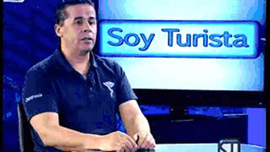
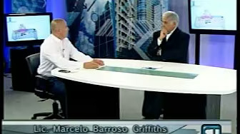

Estómago emocional: la quiropraxia como alivio para “la panza”
“Lo que pensamos repercute en todo nuestro organismo. Cuando los malestares aparecen, la quiropraxia ofrece un camino más allá de los medicamentos.”


“Lo que pensamos repercute en todo nuestro organismo. Cuando los malestares aparecen, la quiropraxia ofrece un camino más allá de los medicamentos.”
“Conocer el tipo de pisada es clave para prevenir dolores en espalda, rodillas, talones y pies en quienes practican running o caminata.”
“Los vicios posturales y movimientos inadecuados afectan la columna; reconocerlos ayuda a prevenir dolores y molestias.”
“La hernia de disco afecta los cartílagos entre las vértebras; la quiropraxia ofrece una alternativa para aliviar el dolor.”
“La escoliosis es una desviación lateral de la columna que puede afectar la salud integral; la quiropraxia ofrece una alternativa de tratamiento.”
“El frío favorece contracturas musculares y rigidez articular; la quiropraxia ayuda a tratarlas al corregir subluxaciones de la columna.”
¿Qué es la quiropraxia?
¿Qué es la quiropraxia? (segunda parte)
Hábitos posturales que afectan la columna
Quiropraxia y estrés en época de vacaciones
